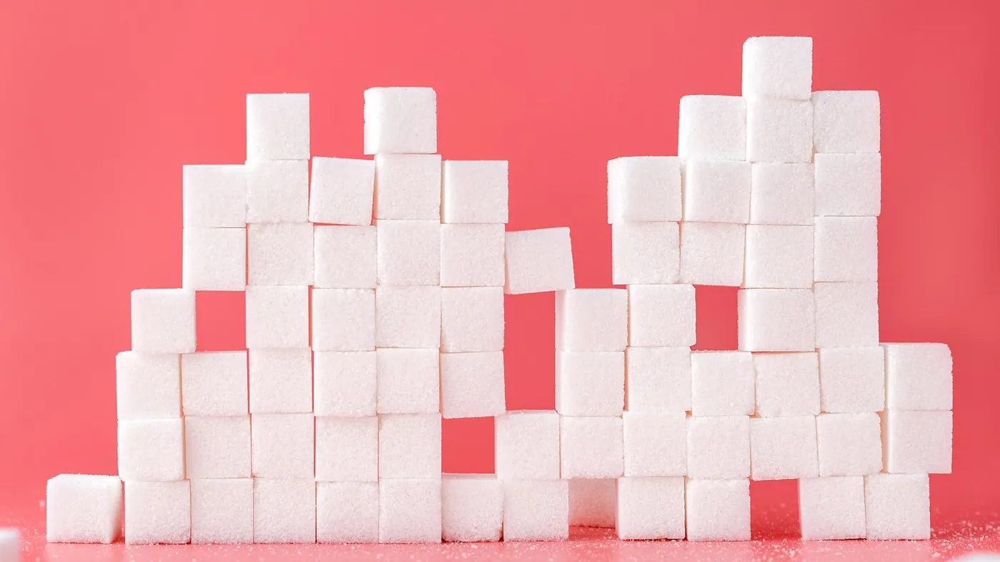
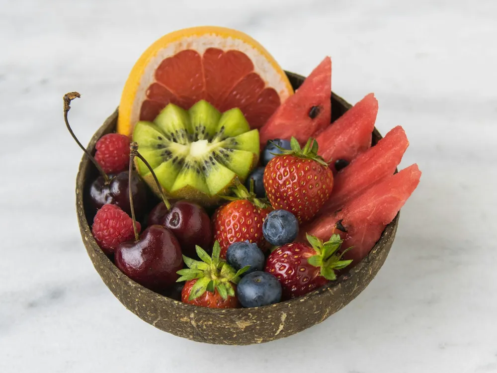
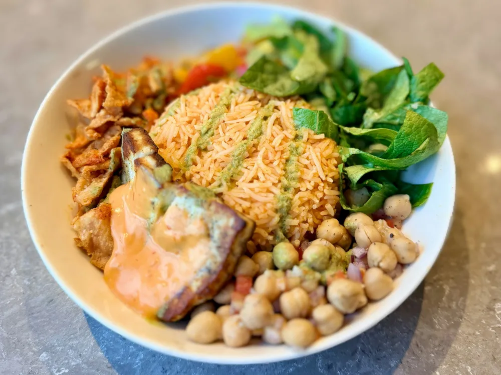

¿El azúcar alimenta el cáncer? Lo que dice la evidencia

«Quita el azúcar, que alimenta el tumor.» Es una de las frases que más escuchan las personas con cáncer y sus familias, a veces de amigos con buena intención y a veces de internet. Y genera mucho miedo: miedo a una pieza de fruta, a un yogur o a un trozo de pan. En este artículo te explico de dónde sale esta idea, qué dice de verdad la evidencia y qué es lo que sí importa cuando comes durante y después del tratamiento.
De dónde sale el mito
Como casi todos los bulos que funcionan, este parte de algo real. Hace casi cien años, el científico Otto Warburg observó que muchas células tumorales consumen glucosa a gran velocidad y la usan de una forma distinta a las células sanas. Es lo que hoy se conoce como efecto Warburg, y sigue siendo un campo de investigación importante1.
Hay otro dato que refuerza la idea: el PET-TAC, una prueba muy utilizada en oncología, consiste en inyectar una sustancia parecida a la glucosa que se acumula en las zonas con más actividad, como los tumores. Ver en la imagen que el tumor «capta azúcar» hace que el salto parezca lógico: si el tumor usa glucosa, quito el azúcar de la dieta y el tumor se queda sin alimento.
El problema es que ese salto no se sostiene, porque el cuerpo no funciona así.
Por qué quitar el azúcar no «mata de hambre» al tumor
Todas las células del cuerpo usan glucosa como fuente de energía, también las del cerebro, los músculos o los glóbulos rojos. Por eso el organismo mantiene la glucosa en sangre en un rango estable, comas lo que comas. Si no tomas hidratos de carbono, el hígado fabrica glucosa a partir de otras fuentes, como las proteínas de tu propio músculo.
Dicho de otra forma: aunque elimines por completo el azúcar y los hidratos de carbono, el tumor seguirá recibiendo glucosa. Lo que sí puedes perder por el camino es energía, músculo y calidad de vida, justo cuando más los necesitas.
Las dietas cetogénicas, muy bajas en hidratos de carbono, se han estudiado en personas con cáncer. Una revisión sistemática no encontró pruebas de que frenen el tumor ni de que reduzcan los efectos secundarios del tratamiento, y advirtió de sus posibles efectos adversos2. Por eso las guías de nutrición oncológica no las recomiendan fuera de ensayos clínicos3.
En resumen: la fruta, la leche, el pan o las legumbres no hacen crecer el tumor. No tienes que tenerles miedo.
Azúcar y riesgo de cáncer: lo que sí sabemos
Una cosa es el azúcar durante el tratamiento y otra la alimentación a lo largo de los años. Aquí sí hay matices importantes.
Los grandes informes sobre alimentación y prevención del cáncer, como el del Fondo Mundial para la Investigación del Cáncer, no señalan al azúcar como causa directa. Lo que relacionan con el riesgo es el conjunto del estilo de vida: una alimentación con poca fruta, verdura, legumbres y cereales integrales, mucha carne procesada, el alcohol, el sedentarismo y el exceso de grasa corporal4.
Sobre el azúcar en concreto, las bebidas azucaradas son lo que más se ha estudiado. En un gran estudio francés, quienes más bebidas azucaradas tomaban tenían un riesgo algo mayor de cáncer, incluidos los zumos de fruta5. Una revisión que reunió decenas de metaanálisis asoció el consumo alto de azúcar, sobre todo el añadido y el de las bebidas, con varios tipos de cáncer, aunque con evidencia de baja calidad. Su recomendación fue limitar los azúcares libres, que son los añadidos y los de zumos y refrescos, no el azúcar natural de la fruta entera o la leche6. Son estudios observacionales, así que muestran una asociación, no que el azúcar sea la causa directa.
Es decir: reducir los refrescos, los zumos y los dulces del día a día es una buena idea para la salud en general. Pero eso no tiene nada que ver con tener miedo a una pieza de fruta ni con hacer una dieta estricta durante el tratamiento.
El riesgo real de las dietas restrictivas

Durante el tratamiento, muchas personas comen menos por las náuseas, la falta de apetito o los cambios en el sabor. Si a eso le sumas una lista de alimentos prohibidos, es muy fácil no llegar a cubrir lo que el cuerpo necesita.
La desnutrición y la pérdida de masa muscular son frecuentes en el cáncer y tienen consecuencias: peor tolerancia a los tratamientos, más complicaciones, más cansancio y una recuperación más lenta. Por eso las guías europeas insisten en vigilar el estado nutricional desde el diagnóstico y en evitar las dietas restrictivas que no tienen respaldo científico3.
Hay además un coste que no sale en los análisis: el miedo. Comer con culpa, vigilar cada etiqueta o discutir en casa por un postre añade estrés en un momento que ya es muy difícil. Y la comida también es disfrute, compañía y normalidad.
Si eres familiar o cuidas a alguien en tratamiento, es normal querer ayudar con todo lo que esté en tu mano, y la comida parece algo que se puede controlar. Pero vigilar cada bocado o retirar alimentos «por si acaso» suele generar tensión en la mesa y que la persona coma todavía menos. Lo que más ayuda es ofrecer, sin insistir, platos que le apetezcan y respetar los días en los que no le entra nada. Si tienes dudas, pregunta a su equipo o a una nutricionista especializada antes de cambiar nada.
Qué hacer en la práctica

- Prioriza comer lo suficiente. Si tienes poco apetito, lo importante es que entre energía. Un batido, unas natillas caseras o un yogur con miel pueden ser grandes aliados los días difíciles.
- Asegura la proteína en cada comida: huevo, pescado, carne, lácteos o legumbres. Ayuda a mantener el músculo.
- La fruta, sí: aporta vitaminas, fibra y agua, y muchas veces es de lo que mejor entra.
- Los hidratos de carbono no son el enemigo: el pan, el arroz, la pasta o la patata son una fuente de energía fácil de tomar.
- Reduce las bebidas azucaradas y los ultraprocesados en el día a día, pensando en tu salud a largo plazo, sin obsesionarte.
- Desconfía de las dietas «anticáncer» que prometen curar o frenar el tumor quitando grupos de alimentos. Si algo suena demasiado bueno para ser verdad, coméntalo con tu equipo antes de probarlo.
- Si tienes diabetes o tu equipo te ha indicado controlar la glucosa por algún tratamiento, sigue sus pautas. Es una situación distinta que conviene ajustar de forma individual.
Cómo te ayudo en consulta en Jaén
Como nutricionista en Jaén especializada en nutrición oncológica y farmacéutica, te acompaño antes, durante y después del tratamiento, en consulta presencial u online:
- Resolvemos los mitos y miedos que te han llegado sobre la alimentación y el cáncer.
- Valoramos tu estado nutricional y adaptamos lo que comes a tus síntomas y a tu tratamiento.
- Reviso tu medicación y los suplementos que tomas para evitar interacciones.
- Damos pautas también a tu familia, para que la comida vuelva a ser un momento tranquilo.
Puedes ver cómo trabajo en nutrición oncológica. Y si estás con quimioterapia, te puede interesar el artículo qué comer durante la quimioterapia.

Isabel Lara Muñoz es dietista-nutricionista colegiada (CODINAN AND-01693) y farmacéutica por la Universidad de Granada, especializada en patología digestiva y nutrición oncológica. Pasa consulta en Jaén y online.
Referencias
- Vander Heiden MG, Cantley LC, Thompson CB. Understanding the Warburg effect: the metabolic requirements of cell proliferation. Science. 2009;324(5930):1029-1033. doi:10.1126/science.1160809
- Erickson N, Boscheri A, Linke B, Huebner J. Systematic review: isocaloric ketogenic dietary regimes for cancer patients. Med Oncol. 2017;34(5):72. doi:10.1007/s12032-017-0930-5
- Muscaritoli M, Arends J, Bachmann P, et al. ESPEN practical guideline: Clinical Nutrition in cancer. Clin Nutr. 2021;40(5):2898-2913. doi:10.1016/j.clnu.2021.02.005
- Clinton SK, Giovannucci EL, Hursting SD. The World Cancer Research Fund/American Institute for Cancer Research third expert report on diet, nutrition, physical activity, and cancer: impact and future directions. J Nutr. 2020;150(4):663-671. doi:10.1093/jn/nxz268
- Chazelas E, Srour B, Desmetz E, et al. Sugary drink consumption and risk of cancer: results from NutriNet-Santé prospective cohort. BMJ. 2019;366:l2408. doi:10.1136/bmj.l2408
- Huang Y, Chen Z, Chen B, et al. Dietary sugar consumption and health: umbrella review. BMJ. 2023;381:e071609. doi:10.1136/bmj-2022-071609
Este artículo es divulgativo y no sustituye las indicaciones de tu equipo de oncología ni la valoración individual de un profesional sanitario.